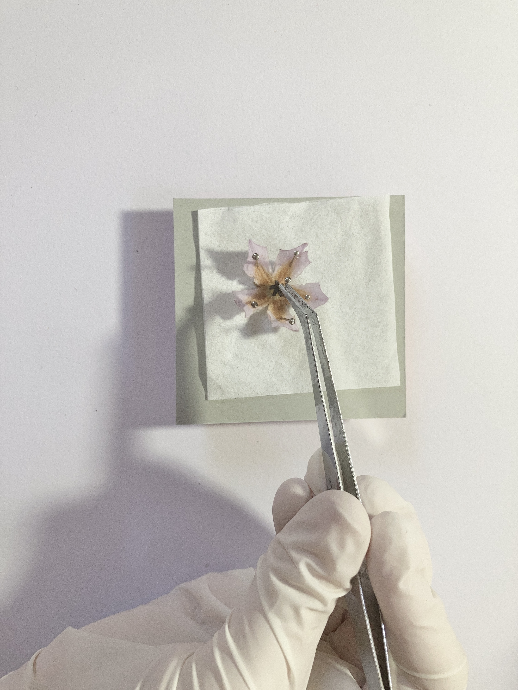
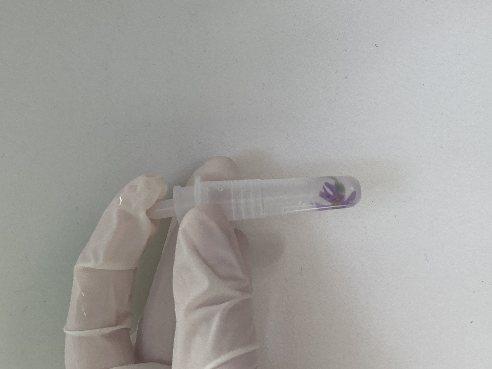
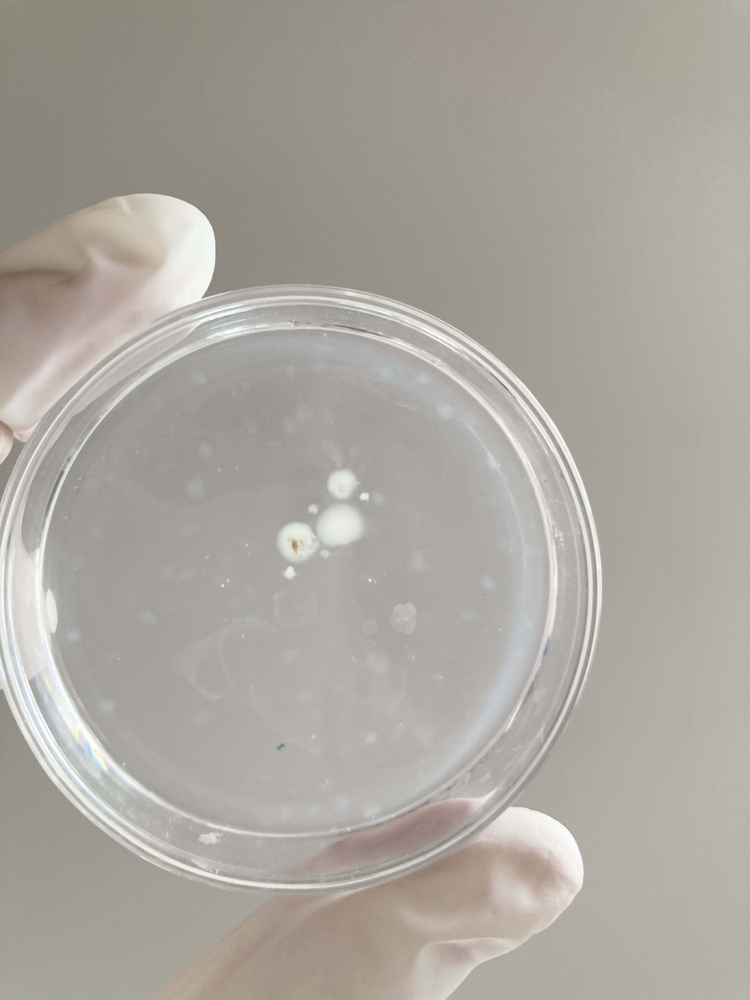
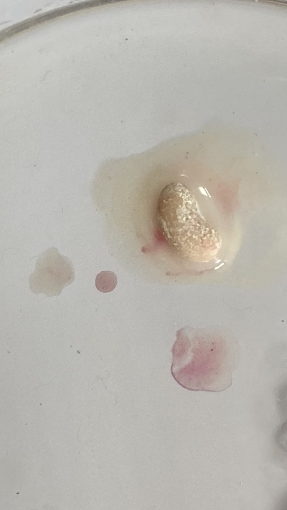
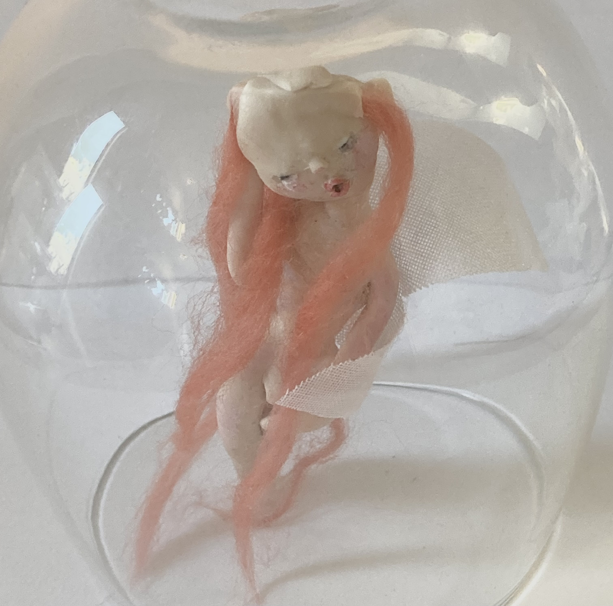

Process of growing the fairies
Ethical Considerations
Attempts of recreating the experiment in a home or lab environment can lead to harm to the organism created, and breach the laws of nonmaleficence in bioethics. Any attempt to recreate the experiments documented on this website, will result in legal precautions.Our experimental documentation is for educational purposes only.
STEP ONE: Flower preperation
The Process begins by prepping, and extracting the desired cell sample from the flower. The flowers are pinned and prepared accordingly.
A range of native Australian flowers are used in our experiment including, paper daisies ( Rhodanthe Chlorocephala), Grevillea flowers and wattle flowers (Acacia Pycnantha)
.................................
STEP TWO: Flower examination
Before cell extraction a sample of each flower is examined by our team biologist using a microscope to ensure the flower has a healthy cell count and quantity. Using a microscope can help determine other qualities of the flower including cell size, shape, and overall morphology. By observing the cells on a micro scale, any abnormalities in the cell can be detected.

..................................
STEP THREE: Preparing the cells
The flower cell sampler and psilocybin liquid ( previously extracted from the fungi species Psilocybe azurescens) are then both added into a vial containing a plant specific nutrient solution called Gamborg's B5 Medium acting as a base culture for cloning growth.
..............................................
STEP FOUR: Petri dish preperation and process
After 24 hours a sample is taken directly from the nutrient solution using a swab tool, and then it is swabbed onto a plain agar-prepared petri dish .
The petri dishes are constantly monitored in their growth stage but rapid Sporulation and culture commonly happens in the first 3 days of colonization. Successful samples will show signs of complex growth patterns by day 5-7. These growth patterns resemble a small embryo shaped mass, which with proper care can continue to develop into fully formed fairies  
...............................................
Once Kept in sterile conditions the fairy will become fully developed In 2-3 Weeks. Out of 3895 trials only 6 trials became fully developed and functioning fairies. Although evidence cannot be drawn due to limited trial numbers The documented average lifespan of the fairies ranges from 3 to 5 weeks.
,,,......................